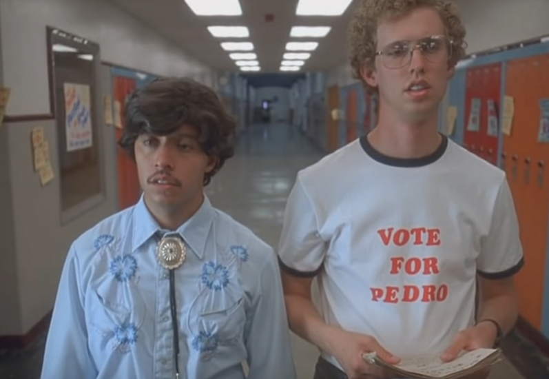

Napoleon Dynamite Festival
By: Kipp Dynamite
In 2004 the Napoleon Dynamite comedy film was filmed in Preston Idaho. Many places in Preston can be seen throughout the film. The film’s creators, Jared and Jerusha Hess are from Preston where Jared went to high school.Napoleon Dynamite movie became a huge hit and Preston Idaho became a tourist attraction for fans. People came from all over the world to tour Preston, including the High School and other places featured in the film. Preston held Napoleon Dynamite Festival for several summers to celebrate Napoleon Dynamite. The festival included Tater Tot Eating Contests, Tetherball Tournaments, Moon Boot Dances, Look-A-Like Contests and The Happy Hands Club performances.
Click here to read the rest of this article...